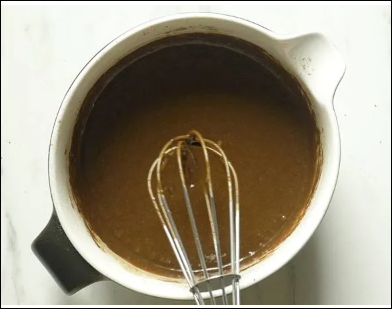
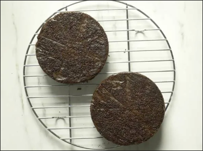

Preheat

Place a sieve over a mixing bowl. Add flour

Add the rest of the dry ingredients - cocoa, baking powder, baking soda and salt. Sieve them all.

Next add sugar.

Mix everything very well until uniform. Make a well in the center.

Heat half cup water in a pot. (dont add water here). Meanwhile pour milk, oil and vanilla to the dry ingredients.
Whisk the wet ingredients first. Then whisk together wet and dry ingredients just until combined. Do not over mix.

You will have a slightly thick batter at this stage.

Quickly pour the hot watter into the batter. The water must be very hot.

Immediately whisk the batter just until the wate is absorbed and the batter looks uniform. Batter is very runny at this stage.
Pour this to the pans. Tap the pan to counter 2 to 3 times.

Bake for 28 to 30 mins or until the tester comes out clean. Please adjust the timing depending on the oven and pan sizes. If baking in a 7 inch pan you may need to bake up to 35 to 38 mins. Cool the pans on a wire rack for 10 mins.
Then invert to a cooling rack. Cool completely before frosting.
Frosting Chocolate Cake
Please follow the recipe card to make the frosting. I have shared below quick tips on how to frost the cake.

Spread a teaspoon of frosting in the center of the cake board or cake stand. Place 4 parchment papers on all 4 sides such that they dont touch the frosting. Place the cake on the parchment paper. The center of the cake has to be on the frosting that was spread. Begin to spread the frosting with a spatula. Even out for smooth surface. Place another cake and repeat the frosting. The frost on the sides. Smoothen the sides as well with the spatula.

I just had some choco chips and sprinkles on top. Then remove the parchment paper gently.